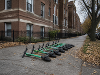
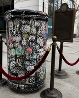

As temperatures dip below 50 degrees, East Lakeview's abandoned scooters have begun their long journey south. "You see them gathering on the corners first," said one Melrose Street naturalist. "By Friday there's a whole flock lying across the sidewalk at Belmont, waiting for the right wind." Residents are urged not to disturb them, which they say is no change from the rest of the year.
The Saturday line at Tilly's extended past the city limits this weekend. "I got in line in October," said one customer at position 4,112. "My kids were in strollers when I started. Now they're asking about colleges." Volunteers have set up water stations every half mile.
As West Lakeview debates landmarking its greystones, East Lakeview has protected its own treasure. Experts believe the bottom sticker layer dates to the Daley administration. Emptying the can now requires a permit.

Early voters at Merlo Library praised this year's bold civic finish. "Notes of democracy and a long finish from the line," said one. Staff reminded patrons there is no wine. Several asked about a flight.
After years of faithful service, a chain link fence on Broadway is now a permanent member of the community. "Some of us have lived here less time than this fence," said one Briar Place resident. Officials say it will come down "soon, in a geological sense."